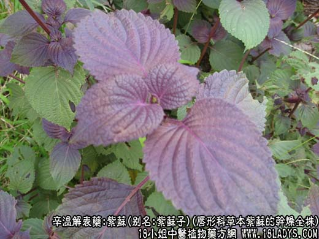
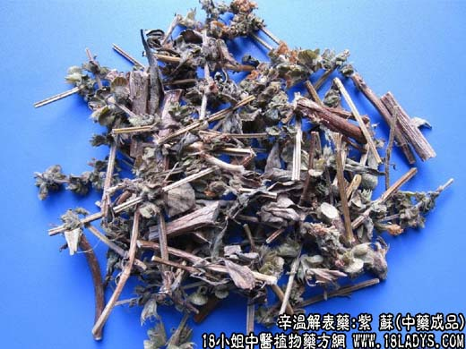
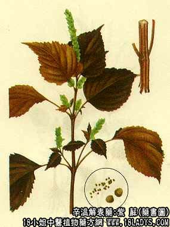

本品为常用中药，《名医别录》列为中频。原名“苏”。现商品多按不同部位分别定名药用。
来源：为唇形科一年生草本紫苏的干燥全株（称紫苏子）。去掉嫩枝及叶片的老梗（称紫苏梗）。摘取的叶片（称紫苏叶）。成熟的果实（称紫苏子）。多为栽培。
植物形态：一年生草本，具特异芳香。茎方形、直立，高30～100厘米，紫绿色。多分枝。也对生，柄长2.5～7.5厘米，叶片卵圆形，长4～12厘米，宽2.5～10厘米，先端突尖，叶缘钝锯齿状，两面紫色或表面绿色，两面疏生柔毛，背面有细油点。总状花序顶生或腋生，花萼钟形，果实成熟时萼膨大，花冠管状，上端二唇形，淡红色，小坚果灰棕色或褐色，卵形。
产地：主产于江苏、浙江、河北、湖北、河南等地，其它各地多有栽培。
性状鉴别：紫苏茎略方柱形，有四棱，暗紫色，显纵沟，具明显的节，节上分枝或生叶，长30～80厘米，直径约3～10毫米，嫩茎上有白毛茸。叶片紫绿色，薄如纸多破碎。顶端有宿存花萼（称苏子兜亦作药用）。果实灰棕色，卵形，直径约1毫米左右。老茎质坚硬，嫩茎质松脆，断面有白色髓心。老茎气微、味淡。嫩茎及叶气芳香，味微辛苦。以茎枝较嫩，紫绿色、带有多数叶片者为佳。
主要成分：含挥发油，主要为紫苏醛。
功效与作用：1、发汗解热；2、利尿；3、健胃，内服能促进胃液分泌，增强胃肠蠕动；4、祛痰，能减少支气管分泌物。
炮制：切咀，生用。
性味：辛温。
归经：入肺、脾经。
功能：理气宽胸，解郁安胎。
临床应用：1、主要用于治疗外感风寒而兼有胸闷、恶心、呕吐者（相当于胃肠型感冒）。苏叶发汗的作用比麻黄、桂枝弱得多，单用效力不大，要与荆芥、防风或生姜等同用以助发汗。但它的特长是兼能理气宽中（调整胃肠功能、帮助消化），止呕（与枳壳同用更好）。有频频恶心呕吐或腹泻者，可用本品4.5g加川连3g，水煎服。至于老人和小儿较轻型的感冒，用麻黄、桂枝嫌发汗太甚时，可用紫苏叶代替，方如香苏饮。
2、用于行气安胎，治疗妊娠呕吐，胸闷恶心。老苏梗作用较好（4.5～9g即可）。配陈皮、砂仁更能增强健胃作用。
3、用于解鱼蟹中毒，要用至30%～60%。此外，还可以外用治疗阴囊湿疹。方法是用苏叶30g煎水，放温后浸洗患部，然后用生油在患处搽匀。
用量：一般6～9g。
处方举例：香苏饮（《局方》）：香附6g，苏叶6g，陈皮3g，甘草3g，生姜9g，红枣3枚，水煎服。
附：紫苏梗，通称苏梗，为紫苏的干燥茎枝，专长顺气安胎（健胃、止妊娠恶心呕吐）。紫苏梗：切片，生用。效用略同紫苏偏于理气安胎。紫苏叶：生用，效用发表解肌，祛风散寒。紫苏子：炒用或生用，效用驱探痰解郁，下气定喘。
注：苏子，分紫苏子（黑苏子）、白苏子二种。北方多习用黑苏子，大部分为野生品。